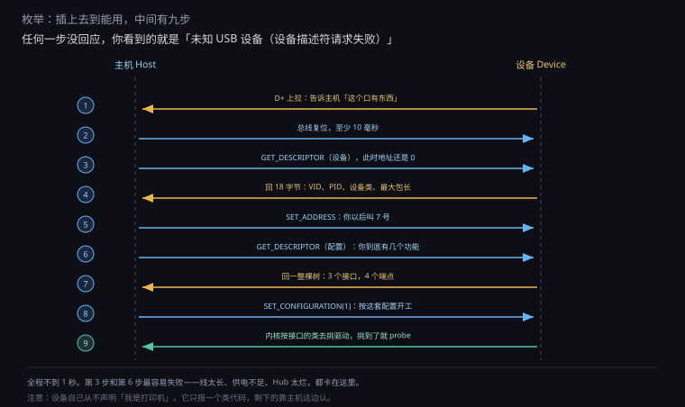
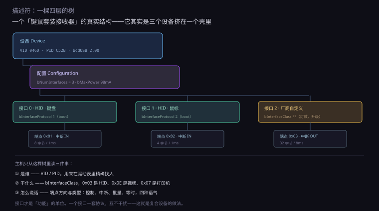
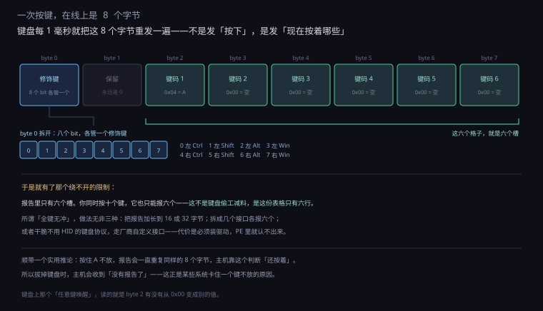
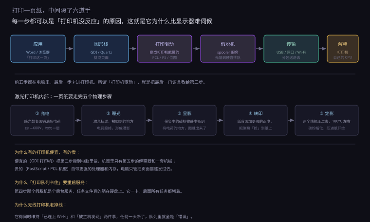
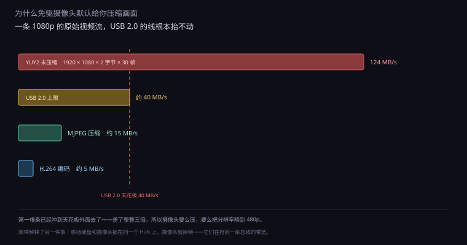

约 1.2 万字 · 6 张图 · 读完你能说清插上一个设备后的那一秒里系统做了什么、 为什么有的免驱有的要装驱动、以及一页纸在打印机里到底经历了什么
先把场景固定下来。一台开着的笔记本，桌面正常，你拿起一个 U 盘，插进侧面的口。
第一件事发生在电气层，比任何软件都早。USB 口里有四根线：两根供电，两根传数据（D+ 和 D−）。 设备那一头，D+ 上挂着一颗 1.5k 欧的电阻，接到 3.3 伏。设备没插进来的时候，这根线是悬空的； 一插进来，主机的 USB 控制器立刻看到 D+ 的电压被拉高。 这就是「有东西插上了」的全部信息——只此一句，别的一概不知。
顺带说一句，这颗电阻挂在哪根线上，本身就是个信号：挂 D+ 是「全速 / 高速设备」， 挂 D− 是「低速设备」（老式鼠标键盘）。主控靠这个先分出快慢两类， 后面的通信速率才有得谈。
接下来是枚举（enumeration）。这个词听着玄，意思很朴素： 主机挨个问一遍「你是谁、你能干什么、你要多少电」，设备挨个答。 问完了，主机在内存里建一个数据结构，把这个设备登记进去。 从这一刻起，系统里才「存在」这个设备。
枚举走完，才是驱动匹配：系统拿着刚问到的身份信息，去自己那本字典里查， 看有没有现成的驱动能管它。查到了，加载驱动，设备的接口出现在系统里； 查不到，设备照样在，但没人会用它——这就是设备管理器里那个黄色感叹号。
这三段的顺序不能乱：先有电，再有身份，最后才有驱动。 很多人排错时把顺序搞反，一看到「设备不工作」就去重装驱动， 其实问题卡在第一段——线太长、供电不够、Hub 太烂，设备连自我介绍都没说完。
下面这三节，就按这个顺序往下走：枚举、描述符、驱动匹配。 再往后是三台具体设备的拆解——打印机、摄像头、手柄， 它们刚好代表三种完全不同的外设类型：单向大批量、等时流、低延迟小数据。
图 0.2.4-1 是完整的九步。这张图值得对着看几遍，因为后面所有的故障现象， 都能在图上找到对应的那一步。

第一步到第二步之间有个细节：主机看到 D+ 拉高之后，不会马上开始问话， 而是先把总线复位——把两根数据线同时拉到低电平，保持至少 10 毫秒。 这是给设备一个「醒醒，从头开始」的信号，也让所有设备把内部状态清干净。
复位之后，所有设备的地址都是 0。这是整个协议里最反直觉的一点：
同一时刻，总线上只能有一个设备在用地址 0。
所以主机必须一个一个来：先跟 0 号说话，问完，给它分配一个新地址，它让开，
再跟下一个 0 号说话。这就是为什么插一个劣质 Hub、上面挂八个设备时，开机要等好几秒。
第三步的问法很有意思。第一次取设备描述符，只要前 8 个字节， 不是全部 18 个。为什么？因为主机这会儿还不知道这个设备的控制端点一次能收多大的包 （这个值就藏在那 8 个字节里）。先要 8 个，读完知道包长了，再要剩下的。
这种「先问一个头，再按头里说的长度问全部」的模式，在 USB 里反复出现。
第六步取配置描述符也是一样：先取 9 字节的头部，里面有个字段叫
wTotalLength，告诉你「整套配置一共多长」，然后按这个长度重新取一次。
因为一个配置下面可能挂着接口、接口下面挂着端点，长度是不固定的。
| 步骤 | 请求 | 方向 | 失败时会看到什么 |
|---|---|---|---|
| 1 | D+ 上拉 | 设备 → 主机 | 完全没反应，像没插 |
| 2 | 总线复位 | 主机 → 设备 | 反复「叮咚」声，设备不断重连 |
| 3 | 取设备描述符（8 字节） | 主机 → 设备 | 「设备描述符请求失败」 |
| 4 | 返回 VID / PID / 类 | 设备 → 主机 | 同上，或认成「未知设备」 |
| 5 | 分配地址 | 主机 → 设备 | 设备在，但地址冲突，时好时坏 |
| 6 | 取配置描述符 | 主机 → 设备 | 「未知 USB 设备（配置描述符请求失败）」 |
| 7 | 返回接口与端点 | 设备 → 主机 | 设备在，但功能不全 |
| 8 | 选定配置 | 主机 → 设备 | 设备在，但不工作 |
| 9 | 驱动加载 | 系统内部 | 黄色感叹号，代码 10 或 43 |
「设备描述符请求失败」这句话，很多人见过，但很少有人意识到它精确到什么程度： 它说明第一步成功了（主机知道有设备）， 第三步失败了（设备没答上来，或者答到一半错了）。 所以问题不在驱动，也不在系统，而在电气层或者设备固件。
常见的三个原因，按概率排： 线太长或太细（电压跌落，信号眼图关闭）、 供电不足（尤其是移动硬盘、外置光驱这类大电流设备接在无源 Hub 上）、 设备固件有 bug（便宜的国产小板子常见，换个口偶尔能好）。
还有一个更隐蔽的：USB 3.0 的干扰。 USB 3.0 在 2.4GHz 附近有很强的辐射，如果一根劣质的 USB 3.0 延长线正好铺在 2.4G 无线接收器旁边，鼠标会卡、Wi-Fi 会掉。这不是玄学， 是 Intel 当年专门发过白皮书的问题——解决办法是把接收器插到远离 USB 3.0 口的那个口上， 或者用一根短的延长线把它挪开。
枚举过程中设备交出去的那些字节，统称描述符（descriptor）。 把描述符摊开看，它是一棵树，四层：设备、配置、接口、端点。图 0.2.4-2 是一个真实的例子。

最上面一层是设备描述符，18 个字节，回答「我是谁」。
里面最重要的两个字段是 idVendor 和 idProduct，
简称 VID 和 PID：前者是厂商编号，后者是产品编号，都由 USB 协会分配，全球唯一。
罗技是 0x046D，你看到的那个接收器是 0xC52B。
第二层是配置描述符。一个设备可以有多个配置， 比如一个设备可以「配置 1：满功率全功能」「配置 2：低功耗只保留基本功能」。 同一时刻只能选一个。大多数设备只有一个配置，所以这一层看起来像摆设， 但它在笔记本摄像头上真的有用——省电模式下切到低带宽配置。
第三层是接口描述符，这一层才是关键。 「功能」的单位不是设备，是接口。 一个接口对应一套协议、一个驱动、一条数据通道。 图里那个接收器有三个接口：接口 0 报键盘、接口 1 报鼠标、接口 2 是厂商自定义的（管灯效和固件升级）。
这解释了很多人困惑的一件事：为什么一个 USB 接收器能同时带键盘和鼠标， 而且在系统里显示成两个独立的设备？ 因为它本来就在描述符里声明了两个接口，操作系统给每个接口单独匹配驱动， 于是「键盘」和「鼠标」各自出现在设备列表里，互不相干。 这类设备有个专门的名字，叫复合设备（composite device）。
顺带一个实用推论：如果你的键鼠套装突然只剩键盘能用， 先别怀疑接收器坏了——很可能只是「鼠标那个接口」的枚举失败了， 键盘那个接口还活着。拔下来换个口再插，让整套重新枚举一次，往往就好了。
第四层是端点描述符。端点是数据真正流动的管道， 每个端点有个编号和一个方向（IN 是从设备到主机，OUT 是反过来）。 端点 0 是特殊的，专门用来做枚举和命令，任何设备都有，永远是双向控制端点。 其他端点按用途分四种类型，这个分类值得单独说。
| 类型 | 保证什么 | 不保证什么 | 谁在用 |
|---|---|---|---|
| 控制 control | 送达，且能双向对话 | 速度 | 枚举、改设置、读状态 |
| 中断 interrupt | 延迟有上限（轮询间隔到了就查） | 带宽 | 键盘、鼠标、手柄 |
| 批量 bulk | 一个字节都不丢 | 什么时候到 | U 盘、移动硬盘、打印机 |
| 等时 isochronous | 按时到，带宽预留 | 丢了不补 | 摄像头、麦克风、声卡 |
这张表里最值得琢磨的是最后一行。等时传输不重传。 主机每毫秒（高速下是每 125 微秒一个微帧）给摄像头留一段时间， 到点就来取数据；取到多少算多少，错了、丢了，也不会要求重发。
为什么可以这么「不负责任」？因为视频和音频有个特点：迟到的数据等于没有数据。 一帧画面晚到 50 毫秒，你看到的不是「画面晚了一点」，而是卡顿和花屏。 与其花时间重传一帧旧的，不如直接扔掉，赶下一帧。 这个取舍在 0.2.3 讲显示器时提过一次，这里是它在总线层的版本。
反过来，U 盘走的是批量传输。它不在乎快，只在乎对。 传给它的每一个字节都要确认，错了重发，所以你能接受「U 盘写文件时快时慢」， 但不能接受「文件写进去以后打不开」。
bMaxPower。
设备在这里申报「我要多少电」，单位是 2 毫安（USB 2.0）。
主机在枚举时读这个值，如果超过端口能给的上限，就拒绝配置这个设备，
并在系统日志里写一条「端口电涌」。
所以那个「USB 端口电涌」的提示，不是电压真的打上来了，
是设备申报的电流超过了预算，主机主动把它关掉了。
现在到了这一节最核心的一个概念：设备类（device class）。
描述符里除了 VID 和 PID，还有一个字段叫 bInterfaceClass，
一个字节，取值范围 0 到 255。这个字节的含义是：
「我打算按第几号规范说话。」
规范是 USB 协会（USB-IF）定的一批文档，每一份定义一个类别设备的完整行为： 怎么描述自己、怎么传数据、出错怎么办。 厂商只要挑一个现成的类，照着写固件，操作系统那边就已经有对应的驱动等着了。 这就是「免驱」的全部秘密。
图里最值得看的是 HID 那一行。HID 是唯一一个「自带说明书」的类。 别的类靠规范文档约定字段含义，HID 不——HID 设备在上报数据之前， 先交一段叫报告描述符的小程序给主机，用自己的话说明： 「我的第 0 个字节，第 0 位到第 7 位，是八个开关」「我的第 1 个字节，是有符号的 −127 到 127，代表 X 轴位移」。
这段描述符是一串「条目」（item），每个条目两三个字节，用一种很紧凑的编码写成。 主机的 HID 驱动读懂它之后，就能把后面来的原始字节解析成「轴」「按钮」「按键」。 所以同一个通用驱动，能同时处理鼠标、键盘、手柄、绘图板、调音台、飞行摇杆—— 因为它不需要预先知道设备的形状，设备会告诉它。
这个设计极其成功，成功到有点过头：任何东西只要会说话，都能装成 HID 设备。 后面讲安全的时候会提到，这也是「一个 U 盘假装成键盘」那类攻击的根源。
举一个最熟悉的例子。图 0.2.4-6 是一个标准键盘的一次报告，固定 8 个字节。

第 0 个字节是八个修饰键的开关位：左 Ctrl、左 Shift、左 Alt、左 Win、右 Ctrl、右 Shift、右 Alt、右 Win， 一人一位。第 1 个字节永远是 0，历史上留给厂商自定义。后面六个字节是六个槽位， 按顺序填当前按下的普通键的编号，没按的槽写 0x00。
于是就有了那个绕不开的限制：标准 USB 键盘最多同时报 6 个键。 你同时按住十个，它也只能报出六个。 这不是键盘偷工减料，是这份表格只有六行。 所谓「全键无冲」，做法无非三种：把报告加长到 16 或 32 字节、 拆成几个接口各报六个、或者干脆不用 HID 的键盘协议而走厂商自定义接口。
还有一种更细的用法：这 8 个字节每毫秒重发一次，主机靠「有没有新报告」判断设备还在不在。 所以拔掉键盘的那一刻，主机收到的不是「松开」消息，而是「没有报告了」—— 这是某些系统上按键卡住不放的原因之一。
再看打印机那一行。打印机的类代码是 0x07，
但这个类规范只定义了「怎么把一页数据送进去」，完全没规定这页数据长什么样。
所以打印机这一类里，真正的差异全在「页面描述语言」上，下一节细讲。
还有一类值得说：0xFF，厂商自定义。
选了这一类的设备，操作系统完全不知道它是干什么的，只能靠厂商自己提供驱动。
专业相机、示波器、工业采集卡、游戏外设的「高级功能」，大多挂在这个类下面。
枚举结束，系统手里有一份完整简历：VID、PID、类代码、接口清单、端点清单。 接下来要决定：用哪个驱动。
三家操作系统的做法大同小异，都是按优先级查表。 表里的每一条规则，要么精确到 VID/PID，要么只写类代码。
在 Windows 上，这张表是 INF 文件。一个 INF 里有一段叫 [Models]，
列着这个驱动支持哪些设备，写法是这样的：
USB\VID_046D&PID_C52B&REV_1201 ← 型号+版本
USB\VID_046D&PID_C52B ← 型号
USB\Class_03&SubClass_01&Prot_01 ← 这一类系统从上往下匹配，谁先命中用谁。所以厂商驱动（写死了 VID/PID） 会优先于系统自带的类驱动（只写类代码）。 这就是为什么你装完厂商驱动之后，设备原来那个「通用 HID 键盘」的名字 会变成「XX 游戏键盘」——匹配规则换了。
Linux 的做法更透明，全在文件系统里能看到。
插上一个设备，/sys/bus/usb/devices/ 下面会多出一个目录，
名字形如 1-2（第 1 条总线上的第 2 个口），里面的文件就是描述符：
idVendor 046d
idProduct c52b
bDeviceClass 00
bNumInterfaces 3
manufacturer Logitech
product USB Receiver
内核模块那边有一张 usb_device_id 表，写法是宏：
USB_DEVICE(vendor, product) 或者 USB_INTERFACE_INFO(class, subclass, protocol)。
两边一比对，命中了就调用那个模块的 probe 函数。
「probe」这个词就是从这里来的，意思是「试探一下，这个设备你能不能管」。
macOS 用的是 IOKit 的 personality 匹配，本质一样： 每个驱动声明自己关心哪些属性（provider class、VID、PID、类代码）， 设备一注册，内核就挨个问过去。
| 你看到的 | 含义 | 卡在哪一层 |
|---|---|---|
| 黄色感叹号 + 代码 10 | 设备无法启动 | 驱动加载了但初始化失败 |
| 黄色感叹号 + 代码 43 | 设备报告故障 | 枚举或运行中出错，硬件/固件 |
| 黄色感叹号 + 代码 19 | 注册表里的配置损坏 | 系统侧，驱动装坏了 |
| 「未知 USB 设备」 | 枚举完了但没有驱动 | 匹配失败，缺 INF |
| 「设备描述符请求失败」 | 枚举第三步就断了 | 电气层，跟驱动无关 |
| 「USB 端口电涌」 | 申报电流超预算 | 供电，主机主动断电保护 |
这张表建议存下来。它最大的用处是帮你判断该不该重装驱动： 凡是带「描述符」「电涌」字样的，都跟驱动没关系； 凡是带代码 10、19 的，才是驱动或系统配置的问题。
设备管理器里那棵「通用串行总线控制器」的树，其实就是枚举结果的直接展示： 根集线器下面是各个端口，端口下面挂设备，设备下面挂接口。 你看到的每一个节点，都是某一次枚举留下来的记录。 树的结构，就是物理连接的结构——这也是判断「设备到底插在哪个口上」最可靠的办法。
前面四节讲的是通用机制。从这一节开始，挑三台设备拆开看。 选打印机打头，因为它是这三台里链路最长的一台， 也是「外设为什么难伺候」这个问题最典型的答案。
你在 Word 里点「打印」，到纸出来，中间隔了六道手。图 0.2.4-4 是完整路径。

第一道手是应用。Word 把这一页排好版，告诉系统「我要打印这个版式」。 第二道手是图形栈（Windows 的 GDI、macOS 的 Quartz），把它翻译成一串绘图指令： 在 (120, 340) 画一行 12 号宋体、画一条 0.5 磅的表格线、贴一张 300dpi 的图。
第三道手是打印驱动，这是整条链上最关键的一环。它要把这串绘图指令 翻译成「打印机自己能懂的语言」。翻译成什么，取决于打印机的档次，这一点下面细说。
第四道手是假脱机（spooler）。这个词是 Simultaneous Peripheral Operations On-Line 的缩写， 意思是「外设操作与主机同时进行」——早年大型机打印时，先把任务写到磁带上缓冲， 主机接着干别的，再慢慢送出去。中文把它译成「假脱机」，取的正是这个意思：不是真脱机，是假装脱机。 今天它是个后台服务，任务数据真的会先落到硬盘上一个临时文件里。
为什么要多这一步？为了解耦。Word 把任务交给 spooler 就可以关掉了， 不用一直开着等打印机打完。打印队列、暂停、取消、优先级，全都建立在这一层上。 代价是：spooler 这个服务一卡，所有打印任务全堵住——这就是「打印队列卡住」的由来， 解决的辦法是重启 Print Spooler 服务，而不是重装打印机。
第五道手是传输，USB、网口、Wi-Fi 都行。第六道手才进打印机，由它自己的处理器解释这堆字节。
现在回到第三道手：驱动到底把页面翻译成了什么？这里有两条完全不同的路线。
路线一：页面描述语言。驱动把这一页写成一段程序， 比如 PostScript 或者 PCL，发给打印机，打印机自己执行这段程序、自己光栅化成点阵。 这条路要求打印机里有一颗像样的 CPU 和几十 MB 内存， 但好处是：打印分辨率由打印机决定，电脑不用管；一张复杂的图，传过去可能只有几十 KB。
路线二：宿主光栅化。驱动在电脑上就把这一页算成点阵图， 打印机只负责「把收到的点阵打到纸上」。这类机器叫 GDI 打印机（或 host-based printer）， 机器里没有页面解释器，成本低、卖得便宜，但电脑负担重、传的数据量大。
数据量差多少？算一页 A4 就清楚了。A4 是 210 × 297 毫米， 600 dpi 意味着每英寸 600 个点，一页就是：
宽 210mm ÷ 25.4 × 600 ≈ 4960 点
高 297mm ÷ 25.4 × 600 ≈ 7016 点
单色二值 4960 × 7016 ÷ 8 ≈ 4.3 MB
彩色 24 位 4960 × 7016 × 3 ≈ 104 MB一页黑白文字，光栅化之后就是 4.3 MB。走 USB 2.0 的批量传输（实际三四十 MB/s）， 一页要零点几秒；彩色照片按 24 位算就是 104 MB，得好几秒。 这就是为什么便宜的彩色喷墨打印机打一张照片要「嗡嗡」很久—— 它不是在算，是在收数据。
而同样一页文字，用 PostScript 描述可能只有 20 KB。 这个差距，就是「打印机里那颗 CPU」值不值钱的分界线。
最后提一句小票打印机。超市收银台那种热敏机，用的是 ESC/POS 指令集， 本质上是一门「排版语言」：换行、加粗、切纸、开钱箱，都是一两个字节的命令。 它简单到连字库都在机器里，所以便宜、快、皮实——这正好是商业场景要的三件事。
数据到了打印机，接下来的事跟电脑没关系了。激光打印机的成像过程， 是整本书里少有的「纯物理、不涉及任何逻辑」的一段，值得走一遍。
核心零件叫感光鼓（photosensitive drum），一个铝筒， 表面涂了一层光电导材料，最常见的是 OPC（有机光导体）。 这种材料的脾气是：平时绝缘，被光照到的地方会导电。整个打印过程就建立在这句话上。
第一步，充电。一根细细的电晕丝（或者充电辊）靠近鼓面， 加上几千伏的高压，把周围的空气电离，让鼓面均匀地铺上一层负电荷，大约 −600 伏。 这一步要求「均匀」，不均匀就会打出深浅不一的竖条。
第二步，曝光。激光器发出一束光，打在一个高速旋转的多边形棱镜上， 反射出去，横扫过鼓面；同时鼓在转，于是光点在上面画出一行一行的扫描线。 被光打到的点，光电导材料导通，电荷顺着铝筒跑掉；没被打到的点，电荷还在。
扫完一整页，鼓面上就留下了一幅静电潜影—— 看不见，摸不着，但电荷分布就是那一页的内容。 这一步和 0.2.3 讲液晶时的「加电压改变分子排列」是同一类思路： 用电压把信息写在某种介质上。
第三步，显影。碳粉仓里，碳粉被摩擦带上负电。 鼓面转到碳粉辊旁边，带负电的碳粉被鼓面上「还有负电荷」的地方排斥， 被「电荷跑掉了」的地方吸引（相对电位差），于是吸附上去。 潜影变成了看得见的粉像。
第四步，转印。纸从鼓下方经过，纸的背面有一个转印辊， 加上更强的正电，把带负电的碳粉从鼓面「抢」到纸上。 这时候粉只是搭在纸上，用手指一蹭就花——必须还有第五步。
第五步，定影。纸经过一对辊子，上辊是加热辊，表面温度 180 到 200 摄氏度； 下辊加压。碳粉在高温高压下熔化，被压进纸纤维里。出来就是能蹭不掉的字了。
| 步骤 | 物理动作 | 坏了的症状 |
|---|---|---|
| 充电 | 鼓面铺满负电荷 | 整页发灰、纵向条纹 |
| 曝光 | 激光扫出静电潜影 | 全白，或整页黑 |
| 显影 | 碳粉吸附到潜影上 | 颜色淡、底灰 |
| 转印 | 碳粉被抢到纸上 | 字能蹭掉、背面脏 |
| 定影 | 高温高压熔进纸纤维 | 一摸就掉粉 |
这张表在修打印机时很好用。比如「打出来的字用手一蹭就掉」， 不用想，是定影这一环——要么加热辊没到温度（预热不足），要么用了太厚的纸。 再比如「整页均匀发灰」，多半是充电辊脏了或者碳粉快没了。
顺便解释两个日常现象。为什么激光打印机开机要「预热」？ 因为定影辊要从室温升到 180 度，这需要十几秒到几十秒。 待机时机器会让它保持一个较低的温度（叫「省电待机」）， 所以第一张总是比后面几张慢——它在等辊子热起来。
为什么打印机会卡纸？因为纸在机器里走的不是直线，是一条 S 形或 C 形的路径， 要绕过鼓、经过定影辊、翻面机构。路径上任何一个辊子的转速差一点点， 纸就会被拉歪；纸受潮变软、静电吸在导板上，也会卡。 大部分卡纸其实是纸的问题，不是机器的问题——这也是为什么说明书总在强调「用干燥的、符合克重的纸」。
喷墨打印机走的是另一条路：没有鼓，没有激光，只有一个喷头， 上面密密麻麻排着几百到几千个微小的喷嘴。 两种主流技术：热泡式（惠普、佳能）给每个喷嘴加一个微加热器， 瞬间加热到 300 度，墨水局部汽化产生气泡，把一滴墨顶出去； 压电式（爱普生）用压电陶瓷，加电压就形变，挤压墨腔把墨滴推出去。
热泡式的喷嘴长期高温，寿命短，所以很多机器的喷头是和墨盒做在一起的， 换墨盒等于换喷头；压电式喷头寿命长，做在机器里，但一旦堵了很难换。 「堵头」是喷墨打印机的通病：墨水在喷嘴口干结，堵住通道。 厂商的对策是定期「洗头」——用墨水冲洗喷嘴，代价是费墨。 这也是为什么长期不用的喷墨打印机，往往比天天用的更容易坏。
摄像头属于 UVC 类，代码 0x0E。它的枚举过程比键盘复杂得多，
因为摄像头不是「一种能力」，而是「一堆能力的组合」：
支持哪些分辨率、每个分辨率支持哪些帧率、每种帧率支持哪些像素格式。
这些组合写在一个叫视频流接口（Video Streaming，VS）的地方， 结构是一层套一层的：格式描述符下面挂帧描述符，每个帧描述符里再列一串帧间隔。 一个普通摄像头，这一段描述符能有几百字节。
Windows 打开「相机」应用时，系统做的事就是：读这张清单， 挑一个「当前场景最合适」的组合，然后告诉摄像头「就按这个来」。 你在设置里选的「720p」或「1080p」，就是在替它做这个决定。
选定之后，数据流就开始了。摄像头走等时端点， 主机每个微帧（高速 USB 下是 125 微秒）来取一次数据，取到多少算多少。 没有确认，没有重传，没有流控。
为什么必须这样？因为带宽不够。图 0.2.4-5 算过这笔账： 1080p、30 帧、未压缩的 YUY2，需要 124 MB/s， 而 USB 2.0 高速口的实际上限只有 40 MB/s 左右。差了整整三倍。

所以免驱摄像头出厂默认给你 MJPEG——每一帧单独压成一张 JPEG， 压缩比大约 8 比 1，带宽降到 15 MB/s，刚好塞得进去。 代价是：每一帧都是独立压缩的，帧与帧之间的冗余完全没利用上， 压缩效率低，画质也比 H.264 差一截。
这不是厂商偷懒，是接口的物理上限逼出来的工程妥协。 想跑 1080p60 或者 4K，就必须上 USB 3.0，或者用 H.264 硬件编码 （把压缩做进摄像头芯片里，主机收到的已经是压缩流）。 近几年的高端摄像头开始支持后者，代价是延迟增加几十毫秒—— 因为编码器要缓存几帧才能算出帧间差异。
还有一个日常现象值得解释：为什么视频会议时画面会突然变糊、掉帧？ 两个原因。一是带宽被抢：同一个 Hub 上插了移动硬盘， 批量传输会占满剩余带宽，等时传输的预留不够，摄像头只能降帧。 二是软件在自适应：会议软件检测到 CPU 忙或者网络差，会主动把分辨率降下来。 前者是硬件层，后者是应用层，但用户看到的现象一模一样。
最后说一句隐私。摄像头的指示灯，绝大多数是并联在供电上的—— 只要图像传感器通电，灯就亮，软件关不掉。这算是一个硬件级的承诺。 但也有过一些机型，灯是由固件控制的，被改过的固件可以让灯不亮而照样采集。 所以真正可靠的防护是物理遮挡：一个滑盖，一块贴纸， 比任何软件开关都硬。
手柄是这三台设备里最「标准」的一台——它就是一个 HID 设备， 和键盘鼠标共用同一个驱动。但它也是最容易被「翻译层」搞乱的一台。
先看它在线上到底是什么。一个 Xbox 手柄插上电脑，每秒发 125 次（或 1000 次）报告， 每次几十个字节。报告里是：两个摇杆的 X/Y、两个扳机的行程、十几个按钮的按下状态、 还有十字键。这些字段的含义，全部写在它的报告描述符里。
这里就能看出 HID 的威力了：报告描述符可以描述任意形状的数据。 摇杆是一个「有符号 16 位、范围 −32768 到 32767」的字段， 扳机是一个「无符号 8 位、范围 0 到 255」的字段， 按钮是「1 位 × 12 个」的一串。通用驱动读懂了描述符，就能把这些字节拆成有意义的输入。
但现实没这么顺。Windows 上有两套手柄接口：老的 DirectInput 和新的 XInput。 XInput 是随 Xbox 360 引入的，它不是标准 HID，而是一套微软自己的协议， 好处是按钮编号统一——所有 XInput 手柄的 A 键都在同一个位置， 游戏不用为每个手柄单独适配。
这就造成了一个长期困扰玩家的现象：同一个手柄，在不同游戏里按钮不一样。 因为那个游戏用的是 DirectInput，读到的是 HID 的原始按钮编号； 另一个游戏用 XInput，读到的是映射后的编号。 两套编号体系并存了十几年，直到今天还没完全统一。
于是就有了第三层：翻译层。Steam 的控制器设置、 DS4Windows、x360ce 这类工具，做的都是同一件事—— 把一种手柄的输入翻译成另一种接口期望的格式。 你在 Steam 里勾上「Switch 手柄支持」，它就在中间加了一层映射， 让游戏以为自己在跟一个 Xbox 手柄说话。
这也解释了为什么有些游戏「一插手柄就识别成键盘」： 手柄厂商为了兼容老游戏，会在固件里同时声明一个键盘接口， 把几个按钮映射成方向键和回车。系统按接口分别匹配驱动， 于是你在设备列表里同时看到一个手柄和一个键盘。
| 参数 | 典型值 | 影响 |
|---|---|---|
| 轮询率 | 125 Hz / 250 Hz / 1000 Hz | 8ms / 4ms / 1ms 一次采样 |
| 摇杆分辨率 | 8 位（256 级）或 16 位 | 能不能做出细微的转向 |
| 扳机行程 | 8 位模拟量 | 赛车游戏能不能半踩油门 |
| 死区 | 5% 到 15% | 回中不精确时的补偿 |
死区这个词值得解释。摇杆是靠两个电位器（或霍尔元件）测角度的， 松开手之后，它不会精确回到正中心，可能偏个百分之几。 如果不对这个偏差做处理，游戏里的视角就会自己慢慢漂。 所以在软件层划一个圆：摇杆位置落在这个圆里，一律当成「没动」。
死区设大了，微调就没了；设小了，视角会漂。这就是为什么竞技玩家要自己调， 也是为什么霍尔摇杆（无接触、不磨损）比碳膜电位器贵——它漂得少，死区可以设得很小。
至于陀螺仪、HD 震动、自适应扳机这些「超出 HID 标准」的功能，
走的是厂商自定义接口（类代码 0xFF），
必须装厂商驱动或者靠 Steam 这类中间层才能用。
标准管得到的部分免驱，标准管不到的部分就得装东西——
这条规律在整个外设领域都成立。
无线键鼠套装里那个小小的 USB 接收器，插在电脑上，系统认出来的通常不是一个设备， 而是两三个。原因在 0.2.4-3 讲过：功能单位是接口，不是设备。 接收器在描述符里声明了「键盘接口」「鼠标接口」，可能还有一个「厂商自定义接口」。
接收器内部是两颗芯片：一颗 USB 控制器（负责跟电脑说话）， 一颗 2.4GHz 射频收发器（负责跟键鼠说话）。 中间那层固件做的事，是把射频帧翻译成 USB 报告： 键盘那头发来「A 键按下」，接收器就拼一个 8 字节的 HID 键盘报告，等主机来取。
所以从系统的角度看，这跟有线键盘没有任何区别。 键盘的「无线」属性，完全被接收器吃掉了——这就是为什么无线键鼠也免驱。
蓝牙是另一条路。蓝牙键鼠不经过接收器，直接跟电脑的蓝牙控制器通信。 但它在系统里最终也表现为一个 HID 设备，因为蓝牙上有一层叫 HID over GATT（HOGP）的规范，把 HID 报告封装进蓝牙的数据包里。 上面那套描述符、报告、解析的机制，一模一样地复用。
区别在配对。2.4G 接收器和键鼠出厂时就配好对了（内部存了地址）， 插上就能用；蓝牙必须先「配对」——双方交换密钥、建立信任， 之后才能开始传 HID 数据。 这就是为什么蓝牙鼠标第一次用要长按配对键，而 2.4G 鼠标插上就行。
| 有线 | 2.4G 接收器 | 蓝牙 | |
|---|---|---|---|
| 延迟 | 1–2 ms | 1–4 ms | 7–30 ms |
| 抗干扰 | 最好 | 中等（跳频） | 较差（共用 2.4GHz） |
| 首次使用 | 插上就行 | 插上就行 | 要配对 |
| 占用 USB 口 | 一个 | 一个（可带多个设备） | 不占 |
| 换电脑 | 插上就行 | 插上就行 | 要重新配对 |
延迟这一行的数字，解释了为什么电竞选手几乎都用有线或者 2.4G，不用蓝牙。 但也要说句公道话：30 毫秒的蓝牙延迟，对办公和网页浏览毫无影响。 人对鼠标延迟的感知阈值大约在 20 到 30 毫秒，超过才会觉得「飘」。 所以「蓝牙鼠标不能打游戏」是对的，「蓝牙鼠标不好用」是错的。
干扰这件事值得多说一句。2.4GHz 这个频段是公共的：Wi-Fi、蓝牙、无线键鼠、 微波炉、无线摄像头，全挤在这里。2.4G 键鼠的对抗手段是跳频—— 每秒换几十到上千次频道，遇到干扰就跳走。 但如果干扰源占满了整个频段（比如一个正在满速传输的 Wi-Fi 6 路由）， 跳到哪里都一样，这时候就会看到鼠标卡顿。 解决办法是把接收器插到离路由器远的口上，或者换 5GHz Wi-Fi。
前面十节讲的是「正常情况长什么样」。这一节反过来，从现象倒推原因。 下面这张表里的每一条，都能在前面找到对应的那一层。
| 现象 | 最可能的原因 | 先试什么 |
|---|---|---|
| 插上完全没反应，连提示音都没有 | 供电或接触 | 换口、换线、换一台机器试 |
| 反复「叮咚」，设备一闪一闪 | 枚举反复失败（供电不足最常见） | 拔掉其它设备，直插主板后置口 |
| 「设备描述符请求失败」 | 电气层，线或固件 | 换短线；换机器；大概率是设备本身 |
| 「未知 USB 设备」 | 枚举成功但缺驱动 | 查 VID/PID，装对应驱动 |
| 「USB 端口电涌」 | 设备申报电流超预算 | 用带电源的 Hub，别用无源 Hub |
| 黄色感叹号，代码 43 | 设备报告故障 | 换线；更新固件；硬件可能坏了 |
| 打印机在，但任务一直「正在打印」 | 假脱机服务卡住 | 重启 Print Spooler 服务 |
| 打印机「脱机」 | 连接断了但队列还在 | 取消「脱机使用打印机」，重连 |
| 摄像头「被另一个应用占用」 | 独占打开 | 关掉会议软件、浏览器标签 |
| 摄像头画面卡、掉帧 | 带宽被抢 | 别和移动硬盘共用一个 Hub |
| 手柄被识别成键盘 | 固件同时声明了键盘接口 | 正常现象，用 Steam 或厂商工具 |
| 蓝牙鼠标隔一会儿卡一下 | 2.4GHz 干扰或省电策略 | 关「允许计算机关闭此设备以节约电源」 |
这张表最想传达的，是「分层定位」的思路。 一个外设出问题，先问它卡在哪一层：电气层（有没有电、线通不通）、 协议层（枚举过没过）、驱动层（匹配上没有）、应用层（软件用没用对）。 四层里，越靠下的问题越像「硬件坏了」，越靠上的问题越像「软件有病」。
举一个具体的例子。有人说「我的移动硬盘插台式机能用，插笔记本就不认」。 按分层看：设备本身没问题（台式机能用），线可能没问题， 那问题在供电——笔记本的 USB 口输出能力弱，或者那个口是 USB 2.0 的。 解决办法不是装驱动，是用带电源的 Hub，或者用双头 USB 线从两个口取电。 先定位到层，再谈方案，这比盲目重装驱动省几个小时。
还有一种情况值得单独说：设备在设备管理器里存在，但应用里找不到。 这说明枚举和驱动都成功了，问题在应用层——可能是权限（macOS 的摄像头权限、 Linux 的 udev 规则和用户组）、可能是应用只认某一种接口、 也可能是另一个进程已经独占了设备。这类问题去查系统日志，比在应用里瞎点有用得多。
这一节从头到尾其实只讲了一件事：外设能被认出来，靠的是「自描述 + 匹配」。
设备不会说「我是罗技的键盘」，它只会交出一串字节： VID 是 0x046D，PID 是 0xC52B，接口类是 0x03，端点 0x81 每毫秒送 8 个字节。 系统拿着这串字节去查表，查到了就加载驱动，查不到就放着。 整个过程没有任何「智能」，全是格式化的问答。
而「免驱」这件事，本质上是把「为每一款设备写一份驱动」变成了 「为每一类设备写一份驱动」。标准化省下的工作量，落在了操作系统厂商身上， 换来的是用户可以闭着眼睛插。 这是过去三十年计算机外设领域最大的一次效率提升， 只是它太成功了，成功到没人记得它曾经是个问题。
三台设备刚好代表三种数据形态：打印机是单向大批量（批量传输，一个字节都不能丢）， 摄像头是等时流（按时到，丢了不补）， 手柄是低延迟小数据（定时轮询，每次都新鲜）。 把这三个形态记住，以后再遇到任何外设，都能先猜出它走哪条路。
最后一句话收尾：这一章讲的是「外面的东西怎么接进来」。 下一章换个角度，讲「怎么把这些东西组装成一台能用的机器」—— 为什么有的件插不上、为什么同样的预算配出来差一倍、二手和矿卡到底能不能碰。 从认识零件，到组装零件。
1. 电气层（D+ 上拉，主机发现有东西）→ 枚举（问身份、分配地址、读配置）→ 驱动匹配（查表加载驱动）。
2. 让所有设备回到初始状态，地址统一归 0。复位后同一时刻只能有一个设备用地址 0，所以必须一个一个来。
3. 因为主机还不知道控制端点一次能收多大的包，而这个值就在前 8 个字节里。先读头，再按头里的长度读全部。
4. 卡在第三步。说明电气层是通的（主机知道有设备），但设备没答上来。查线材、供电、设备固件，别动驱动。
5. 设备 → 配置 → 接口 → 端点。一个物理设备可以声明多个接口，每个接口一套协议、一个驱动，所以功能单位是接口。
6. 控制保证送达；中断保证延迟上限；批量保证不丢；等时保证按时到但不保证不丢。摄像头要的是「按时」，晚到的帧等于废帧。
7. 因为厂商照着 USB-IF 的类规范写固件，操作系统内置了对应的类驱动。专业设备用了自定义类（0xFF），没有通用规范，只能厂商自己写驱动。
8. 约 4.3 MB（4960 × 7016 ÷ 8）。这解释了为什么便宜的 GDI 打印机打一页要等——它不是在算，是在收几 MB 的数据。
9. 充电、曝光、显影、转印、定影。一蹭就掉是定影没做好，碳粉没熔进纸纤维。
10. 因为 1080p30 的原始 YUY2 需要 124 MB/s，而 USB 2.0 实际只有 40 MB/s 左右，差三倍。MJPEG 压到 15 MB/s 才塞得进去。